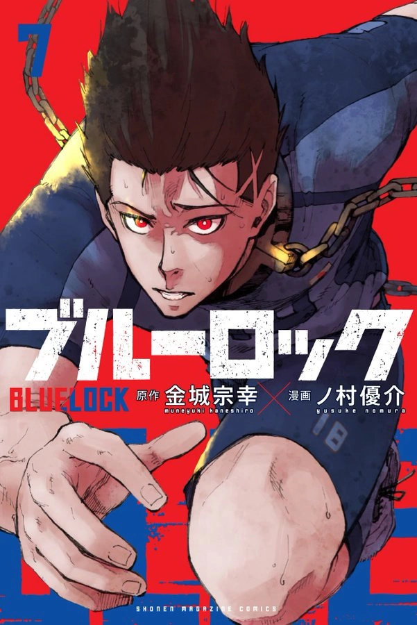
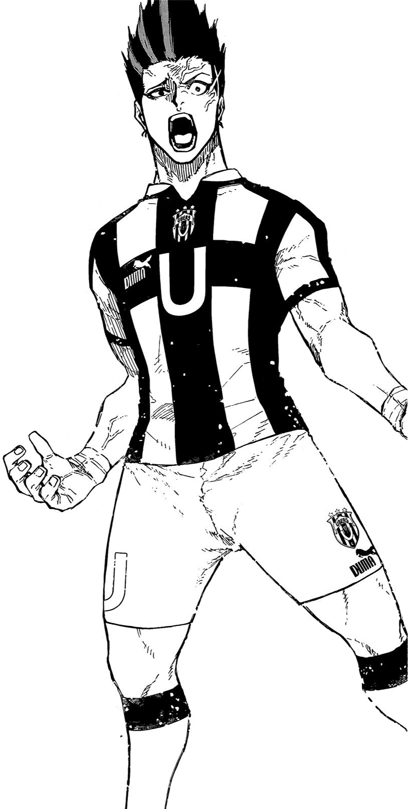
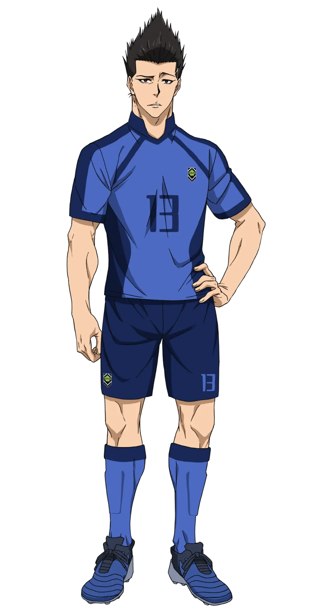

Japanese: 馬狼 照英
Rōmaji: Barō Shōei
Alias(es): "king"
Age: 18
Birthday: June 27
Height: 187cm / 6"2
Hair color: Dark Brown
Eye color: Red
Team: Ubers (Italy)
Jersey Numbers: 13 (Japan U-20) / 13 (Manshine City)
Position(s): Striker / Right Winger
Baro is a large young man with slim red eyes and long black hair that he wears up in a spiky style. When he lets it down, his hair is shoulder-length. Baro also has a muscular build due to his dedicated training regimen, which keeps up his physical fitness.
In accordance with his perception of himself as "the King," Baro has an imperious personality, seeing himself above others and maintaining an arrogant and selfish attitude. Initially, Baro perceived all others on the field as supporting roles, moving for the sake of his own goals, with himself being the main actor on the stage. He is obsessed with pursuing his own soccer but doesn't actually like it or have a passion for it. The need to face others who play soccer and to use his goals to drag them off the seat of the main actor and replace them motivates Baro. The pleasure obtained through this is something Baro believes is only for the strong. Baro is the kind of player who refuses to pass the ball, and whenever he loses possession, he endeavors to steal the ball back or steal a goal.
After his symbolic loss to Isagi, where he felt he lost his position as the main actor, Baro adopted a more villainous approach to his own philosophy. He is now willing to adopt a "villain" role if it means stealing back that position. Despite this new wicked take, Baro also matured after that match, being willing to admit when he was beaten and asking Isagi about the soccer he wants to play. Baro was visibly upset when he did not make the Blue Lock Eleven lineup, despite Isagi doing so, and has since been focused and biding his time to play. When Baro is finally subbed in to play the Japan U-20, he still has his overly critical and rude demeanor.
In keeping with his obsessive personality, Baro is a perfectionist when it comes to controlling his environment and routine. He keeps constant order in his surroundings, cleaning and organizing his living space within Blue Lock and getting angry at those who don't. This also extends to the bath area and controlling how people behave within it. Baro's obsession also extends to his training, where he is diligent and stoic. He always performs an extensive routine of physical fitness training to maintain his strength.
During the Neo-Egoist League, Baro shows what's his ultimate ambition: to "conquer" the world, wanting to leave his mark on an entire generation of soccer as a king, and will crush anyone who dares to challenge him or his throne. However, he states that he will do it on his own, refusing to accept the help or any kind of philosophy of anyone, even from Marc Snuffy, who wants Baro to become his successor as the king of Ubers.